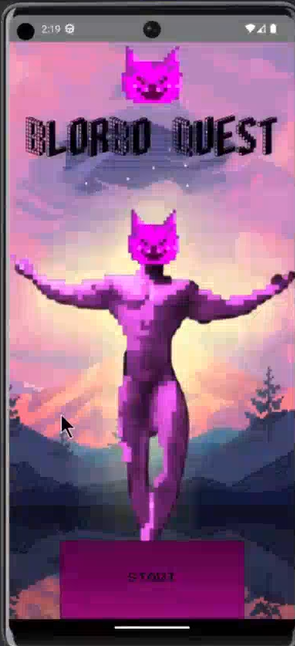

Aspiring Game Developer
I am a passionate Computer Science student at Ohio Northern University with a strong foundation in programming and game development. I have experience building interactive applications using Unity, C++, and web technologies. My goal is to contribute to creating immersive experiences and solving complex challenges in software development.
Currently seeking internship opportunities to enhance my skills and collaborate on innovative projects.
BlorBo Quest is a collaborative project developed by me and two fellow students. The game is currently in the demo stage and is designed as a clicker-style game with multi-page actions. Initially developed for Android-based platforms, we are now expanding our scope to include PC compatibility using Unity.
You can find the project on GitHub: BlorBo Quest GitHub Repository
Designed and deployed custom websites for local businesses, focusing on responsive design, user-friendly interfaces, and SEO optimization. Technologies used include HTML, CSS, JavaScript, and SQL.
Worked on various personal game development projects using Unity and C#, implementing features like pathfinding algorithms and real-time visual effects.
Email: destinymorrison484@gmail.com
Phone: (740) 684-1911
Location: Junction City, Ohio, 43748